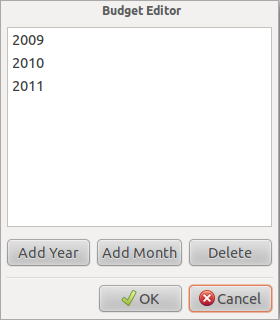
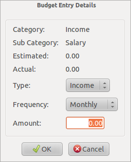

Mit MMEX können sie Jahres- oder Monatsbudgets erstellen. Damit können sie ihre tatsächlichen Ausgaben mit denene ihres Budgets vergleichen.
Budgets können in Kalenderjahren oder Finanzjahren dargestellt werden. Verwenden Sie das Optionsmenü um den Start des Finanzjahres und andere fixen Einstellungen zu treffen.
Um ein Budget zu erstellen, klicken Sie rechts auf den "Budgeting"-Knoten und fügen Sie ein Budgetmonat oder -jahr hinzu.
Sobald ein Jahr hinzugefügt wurde, wählen Sie das gewünschte Jahr, um das Budget Setup anzuzeigen.
Jede Kategorie kann dann durch Doppelklick auf die ausgewählte Kategorie bearbeitet werden. Dies geschieht für alle nachfolgenden Kategorien.
Das wird der Budget für dieses Jahr. Nachfolgende Monate und/oder Jahre können aus diesem Jahr abgeleitet werden.

Summen für alle Kategorien werden für jede Hauptkategorie angezeigt.
Wenn Sie ein Budget einrichten, können die Darstellung der Kategoriesummen deaktivieren indem Sie das Menü Ansicht → Budget Setup: Ohne Summen verwenden.
Mit den Berichten unter "Budget" ist es nun möglich, Ihre tatsächlichen Ausgaben mit dem geplanten Budget zu vergleichen.